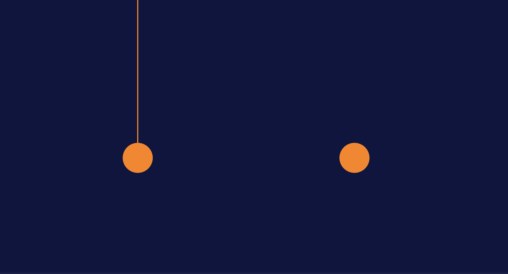
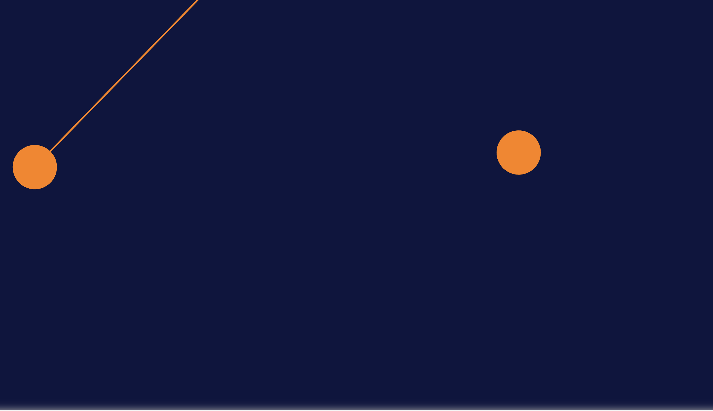
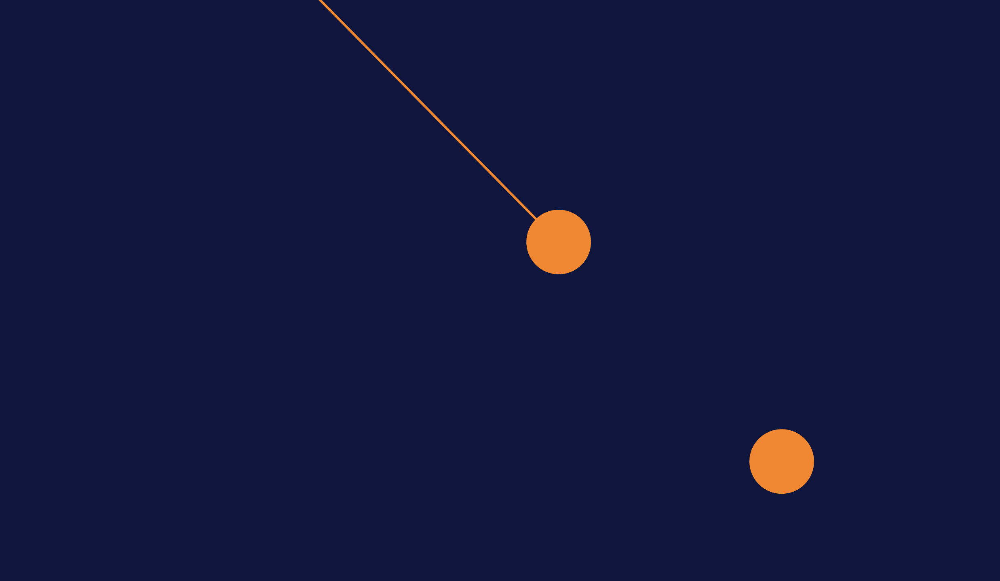
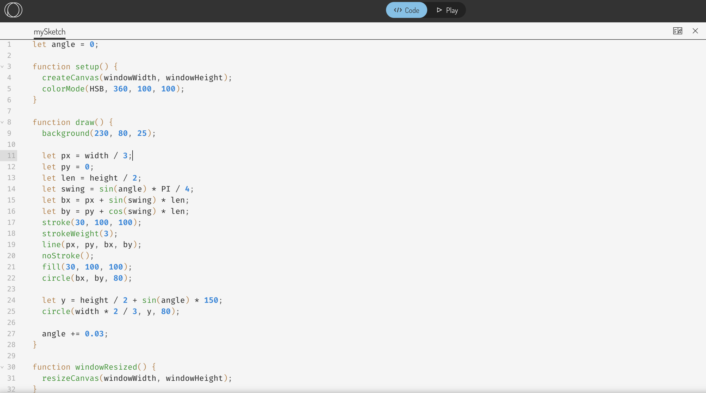

I first had to choose which two objects to focus on and what movement they would oscillate between. I decided on a pendulum swing and a bounce for two same-sized orange balls against a blue background. As the pendulum swings all the way to the right, the other ball jumps up to its highest point. The most difficult part of this process was understanding how to code for the sketch, since it is very command based. I did have help from AI to walk me through understanding how to think about the code logic.



